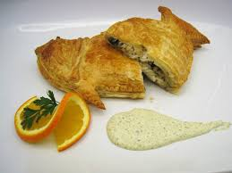

Ingredientes
- 1,250 gr lubina, sin piel y sin espinas
- 1 paquete masa hojaldre
- 1 huevo
- 1 paquete brotes tiernas espinacas
- 100 gr queso en láminas muy finas
- hierbas frescas (perejil, cilantro, eneldo, tomillo..)
- 1 limón
- sal Maldon y pimienta molida
PREPARACIÓN
- En la pescadería: Hay que decir que quiten la piel y las espinas de la lubina y que dejen los dos lomos enteros así, tal cual
- Ya en casa: Se lava el pescado. (Si vamos a congelarlo se rocía con un poco de limón y se congela en una bolsa de plástico bien cerrada y para descongelar, se saca del congelador y se deja en la parte superior del frigorífico durante 12 horas)
- Se seca: Con una servilleta, o dos, de papel. Se rocía con el zumo de limón y un poco de sal, y se hace un "sándwich" con los dos lomos, poniendo antes unas ramitas de eneldo o tomillo como el relleno. Se envuelve el pescado en una bolsa de plástico tipo para congelar alimentos, o en papel transparente, y se mete en la nevera durante 30 minutos. Se calienta el horno a 200º
- Se extiende la masa de hojaldre: Sobre la fuente de horno previamente engrasada. Se pone una capa de hojas de espinacas en el centro de la masa y luego encima de esta una capa de queso cortado en láminas muy finas. Encima de estas dos capas ponemos la lubina. Quitamos las hierbas de dentro y las sustituimos por unas hojas de perejil o cilantro fresco. Encima del pescado ponemos unas hojas más de espinacas. Luego cerramos la masa de hojaldre bien por arriba, con la ayuda de huevo batido que se pone en el borde de la masa. Apretamos muy bien el cierre, tal y como se puede ver en la foto de la receta. Luego se realizan unas cortes en la masa arriba, para permitir que se salga el vapor cuando se hornea. Finalmente se pinta la masa con huevo batido.
- Se hornea: Se coloca la fuente en la parte mediana del horno. A los 10 minutos se baja el fuego a 180º y se deja 25 más. Al sacarlo del horno, cuando está dorada la masa, se deja 15 minutos al reposo antes de empezar a servir. Se sirve con ensalada y salsa rosa, salsa tártara o mahonesa.